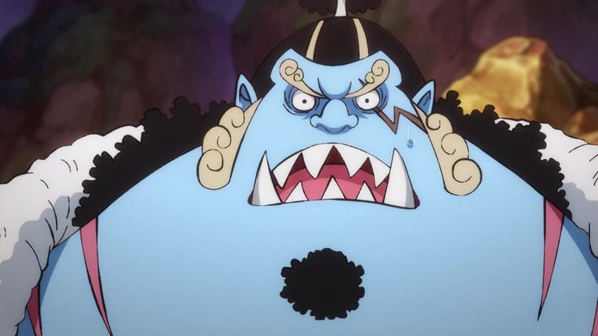
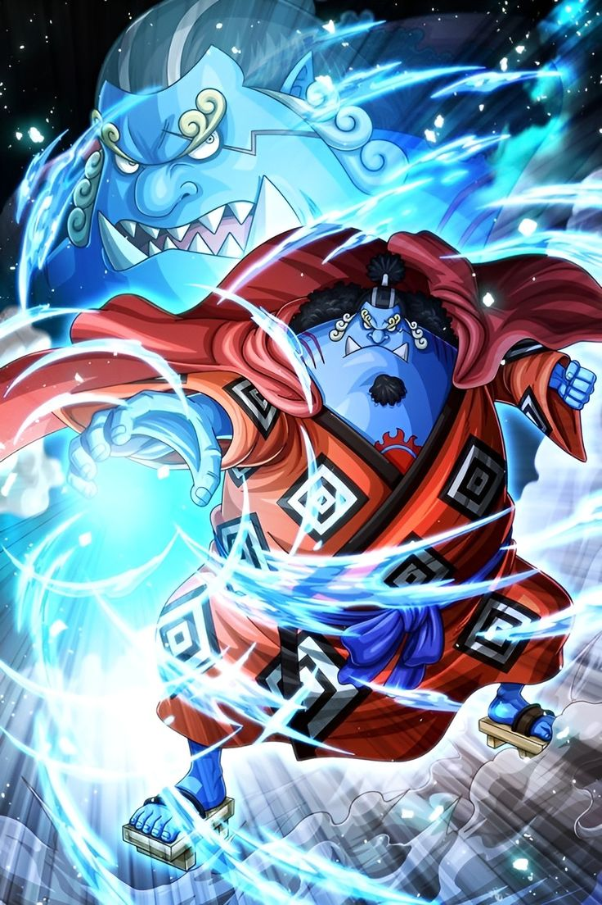
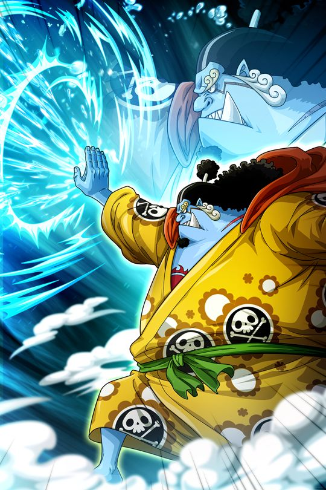

Jinbe(Helmsman)
Jinbe is a fish-man and a former Warlord of the Sea. He was a key member of the Sun Pirates, fighting for fish-man equality. Jinbe rejected the Warlord system after seeing its corruption and aligned himself with Luffy during the events of the Marineford War and later Whole Cake Island. As a skilled helmsman and master of Fish-Man Karate, Jinbe dreams of a world where humans and fish-men coexist peacefully. He officially joined the Straw Hats during the Wano arc.
POWER OR TECHNIQUES:

Water Shot
Compresses water into a high-pressure bullet-like projectile to attack from a distance.

Vagabond Drill
A spinning punch infused with water manipulation, delivering immense force.

Water punch
Powered by Me~ Sana Maka pasa po!!!